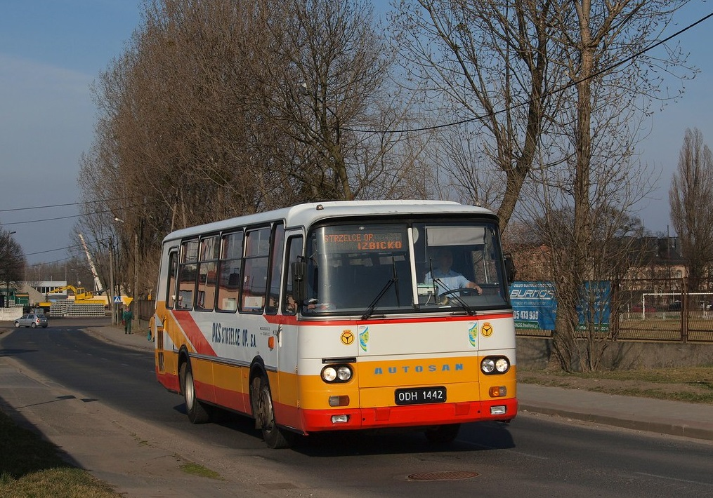

Menu
Autosan_H9
Była to seria autobusów lokalnych, międzymiastowych a także miejskich klasy midi produkowanych w latach 1973-2002 w Sanockiej Fabryce Autobusów (SFA), a następnie w zakładach Autosan S.A. w Sanoku.
Autobus zdobył dużą popularność na rodzimym rynku, szczególnie wśród przedsiębiorstw PKS oraz w mniejszym stopniu szkół nauki jazdy oraz przewoźników prywatnych.
Wpłynęła na to prosta i trwała konstrukcja odporna na złą jakość polskich dróg, łatwość napraw i serwisu oraz niska cena.